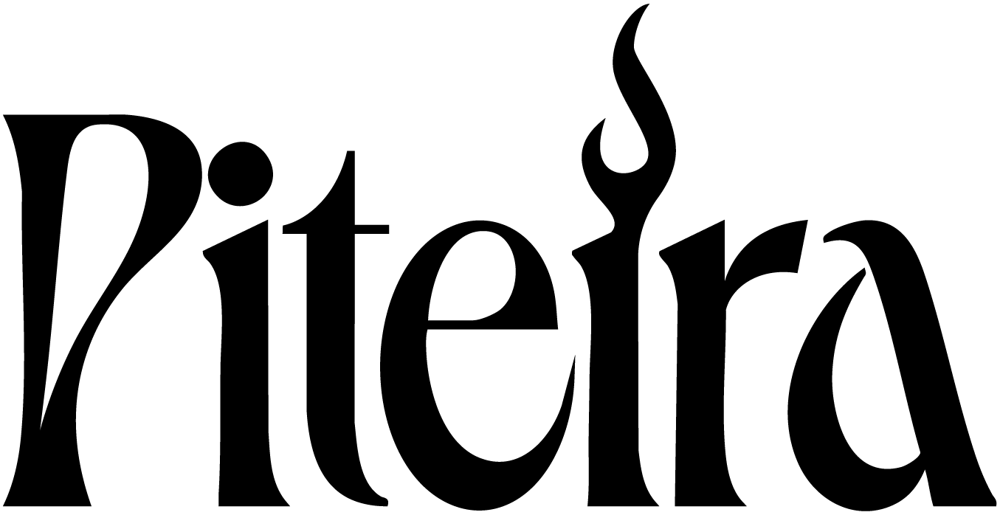

Material pronto para divulgação de shows da Piteira: release, ficha técnica resumida, logos e fotos em alta resolução.
A Piteira é o tributo a Pitty de Florianópolis/SC. Nascida de uma única apresentação entre amigos que superou todas as expectativas, a banda leva aos palcos os maiores sucessos da princesa do rock brasileiro — de Admirável Chip Novo a Me Adora — sem deixar de lado os "lados B" que fazem a alegria de quem é fã de verdade.
Com formação completa de cinco integrantes (vocal, duas guitarras, baixo e bateria), o show tem cerca de 1h30 e atravessa todas as fases da carreira da cantora, com a energia e a emoção que Pitty proporciona ao vivo. A Piteira já passou por palcos como Loud Fest, Haoma e Bar do Castelo (Porto Belo), e está disponível para contratação em bares, casas de show, festivais e eventos.
☝️ Texto livre para uso em divulgação de eventos, releases e programação.
| Nome | Piteira — Tributo a Pitty |
| Base | Florianópolis/SC (disponível para viagens conforme o evento) |
| Formação | 5 integrantes — vocal, guitarra solo, guitarra base, baixo e bateria |
| Show | ±1h30 · 20+ músicas (repertório completo) |
| Técnico | Rider técnico completo (mapa de palco + input list; modo compacto em linha/DI disponível) |
| Contato | (48) 99903-0613 · piteira.oficial@gmail.com · @piteira.oficial |
Pacote com todas as versões da marca (colorida, positiva, negativa, quadrada e vetorial em PDF):
📁 Baixar pacote de logos (Google Drive)
Clique na foto para abrir em alta (2000px) e salvar. Fotos liberadas para divulgação; crédito @manufaverofoto nas fotos do Haoma.
🎧 OUÇA Playlist do repertório no Spotify.